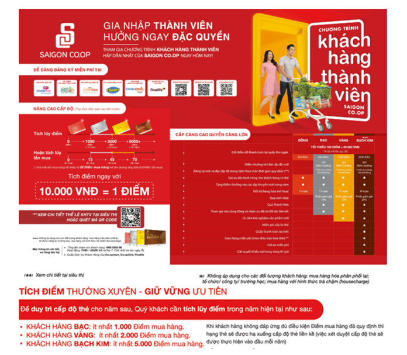

Quyền lợi thẻ Thành viên khách hàng

QUY ĐỊNH:
- Thẻ chỉ được cấp cho công dân Việt Nam có CMND/ CCCD/ CMQĐ, người nước ngoài có Hộ chiếu, tổ chức/ doanh nghiệp. Mỗi khách hàng chỉ sở hữu một (01) mã số thẻ.
- Chương trình chỉ tính điểm khi khách hàng có xuất trình thẻ do Saigon Co.op phát hành (hoặc mã vạch in
tạm tại máy truy cập thông tin, hoặc đọc số điện thoại đăng ký) khi thanh toán tại quầy Thu ngân. Điểm
và thông tin hồ sơ sẽ được cập nhật chính thức sau 24 giờ kể từ khi phát sinh giao dịch.
- Điểm mua hàng có giá trị để xét cấp độ và quyền lợi cho một (01) năm (từ ngày 01/01 đến ngày 31/12). Sang năm tiếp theo thẻ được tái sử dụng để tích điểm.
- Để nhận quyền lợi từ chương trình hoặc tác động vào hồ sơ thông tin:
- Đối với chủ thẻ là khách hàng cá nhân: chủ thẻ chỉ cần xuất trình thẻ chính, không cần xuất trình CMND/
CCCD/ CMQĐ/ Hộ chiếu, khách hàng vui lòng không sử dụng mã vạch in tạm tại máy truy cập thông tin;
- Đối với Khách hàng tổ chức/ công ty/ trường học, hoặc khách mua hàng với hình thức trả chậm (housecharge):
cá nhân đại diện cần xuất trình đầy đủ Giấy giới thiệu và CMND/ CCCD gốc của cá nhân đại diện.
- Với mục đích đảm bảo quyền lợi cho đúng khách hàng là chủ thẻ của chương trình KHTV, khách hàng vui lòng
liên hệ trực tiếp siêu thị đăng ký sinh hoạt và KHÔNG nhờ người thân/bạn bè nhận thay quyền lợi và/hoặc
thực hiện những tác động vào hồ sơ của chủ thẻ.
- Trong một số trường hợp bất khả kháng bắt buộc phải nhận thay quyền lợi và/hoặc thực hiện thay tác động
vào hồ sơ của chủ thẻ, người thực hiện thay vui lòng xuất trình đầy đủ thẻ chính và Chứng minh nhân dân/
Passport của cả chủ thẻ và người nhận thay.
- Để đảm bảo quyền lợi cũng như tạo điều kiện thuận lợi trong công tác chăm sóc khách hàng, khách hàng vui
lòng cung cấp đầy đủ và chính xác thông tin theo mẫu đăng ký. Saigon Co.op sẽ miễn tiếp nhận giải quyết
các quyền lợi của chủ thẻ nếu thông tin hồ sơ không đầy đủ hoặc không chính xác
- Saigon Co.op sẽ miễn tiếp nhận giải quyết các quyền lợi nếu quá thời hạn nhận theo quy định tại thể lệ chương trình.
- Thẻ là tài sản của Saigon Co.op cấp cho khách hàng. Khi mất thẻ, chủ thẻ liên hệ quầy Dịch vụ khách hàng
tại các hệ thống bán lẻ của Saigon Co.op (Co.opmart, Co.opmart SCA ,Co.opXtra, Co.op Food, Co.op Smile,
Finelife, Cheers) để làm thủ tục cấp lại thẻ. Đối với thẻ không liên kết với các đối tác, chi phí cấp lại thẻ là 10.000 đồng/ thẻ.
- Thẻ không phát sinh doanh số trong một (01) năm sẽ bị khóa và bị loại khỏi chương trình.
- Trong trường hợp phát hiện xảy ra tiêu cực trong việc sử dụng thẻ hoặc theo yêu cầu của khách hàng, Saigon
Co.op sẽ tiến hành ngưng việc sử dụng cũng như thu hồi thẻ của khách hàng khi đã giải quyết xong các quyền
lợi liên quan đến điểm tích lũy của chủ thẻ.
- Căn cứ vào tình hình thực tế với mục tiêu nâng cao giá trị ưu đãi cho khách hàng, Saigon Co.op có thể linh
hoạt điều chỉnh thể lệ chương trình Khách hàng Thành viên mà không cần thông tin trước với khách hàng.
- Mọi thắc mắc vui lòng liên hệ Tổng đài chăm sóc khách hàng 1900 5555 68; hoặc đến quầy Dịch vụ khách hàng
của các hệ thống bán lẻ của Saigon Co.op (Co.opmart, Co.opmart SCA, Co.opXtra, Co.op Food, Co.op Smile, Finelife, Cheers).